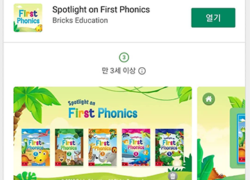
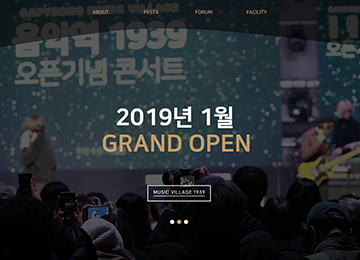
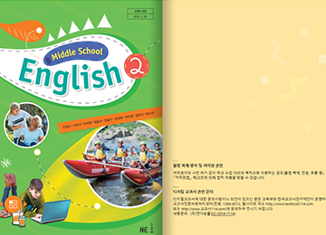

Jeong YoungHun
정영훈
publisher & developer
안녕하세요. 현재 아람 멀티미디어 소속 주임연구원 정영훈입니다.
아람 멀티미디어에서 작년 11월에 파견직을 시작해 1월엔 정규직으로 전환되었습니다. 파견직일 때부터 계약 외 홈페이지 퍼블리싱 등 다양한 업무를 자신의 일처럼 열심히 하여서
1월엔 정규직으로 전환이 되었습니다.
최근에는 동양북스 바둑 프로젝트를 단독으로 개발 및 퍼블리싱을 하고 있습니다.
아래 링크는 최근에 작업한 프로젝트 클라이언트용 홍보 서버 링크입니다.
OFFICIAL PROJECT

동양북스 GOGO바둑마스터
프로젝트 이름: GOGO바둑마스터
개발 & 퍼블리싱: 단독작업
개발기간: 7월 ~ 10월 (1권개발 완료)
작업내용: epubViewer 프레임워크를 기반으로
커스터마이징, 바둑개발, 기타 뷰어 기능연결 및 오류 수정,
IE, Edge, Anidroid, Ios, DesktopApp 플렛폼에 퍼블리싱 및 크라스브라우징.
사용기술: HTML, CSS, JavaScript, jQuery, node.js, nw.js,
fabric.js등
광주과학관 프로젝트
프로젝트 이름: 칠교놀이
개발 & 퍼블리싱: 3명작업(참여율 60%)
개발기간: 4월 ~ 7월(칠교놀이및 에너지골드버그)
작업내용: node.js, soket.io.js, plain-draggable.js 등을 이용하여
칠교놀이를 2명의 클라이언트가 게임을하여 완성하면 서버화면에 출력해주는 게임 개발 및 퍼블리싱
사용기술: HTML, CSS, JavaScript, jQuery, node.js, soket.io.js, plain-draggable.js
비고: 이 게임을 플레이하시고 싶으시면 국립광주과학관 2층 1관 2존 빛과 소리의 칠교놀이를 찾아가시면 됩니다.
아래 링크는 공식 홈페이지에 기재된 내용(06번에 있습니다)
국릭광주과학관 홈페이지(click)

사회평론 First Phonics
프로젝트 이름: First Phonics
개발 & 퍼블리싱: 참여율70%
개발기간: 1월 ~ 4월
작업내용: 사회평론 중국진출용 어린이 영어앱 개발
하이브리드앱으로 앱제외, 내부컨텐츠(게임제외)외 모든 컨텐츠 개발및 퍼블리싱, 게임수정,
Anidroid, Ios 최적화
사용기술: HTML, CSS, JavaScript, jQuery, jQueryUI
구글플레이 링크: https://play.google.com/store/apps/details?id=kr.ninth.firstphonics

가평뮤직빌리지 1939
프로젝트 이름: 뮤직빌리지 음악역1939
개발 & 퍼블리싱: 2명작업(참여율90%)
개발기간: 11월 ~ 12월(2~3주)
작업내용: 가평뮤직빌리지 1939 홈페이지 개발, 퍼블리싱,
Android최적화
사용기술: HTML, CSS, JavaScript, jQuery, bxSlider.js
비고: 파견직일때 계약에없는 프로젝트였음.
4~5개월 사용후 모바일및 DB연결 최적화를 위해
리뉴얼함
리뉴얼사이트 링크: http://www.musicvillage1939.com/
동아 디지털교과서
프로젝트 이름: 동아 디지털교과서
개발 & 퍼블리싱: 단독작업
개발기간: 10월 ~ 12월
작업내용: 동아 디지털교과서 고등영어1, 2, 3학년 교제 HTML, CSS, image, JavaScript등
오류 수정및 추가 IE 크로스 브라우징
사용기술: HTML, CSS, JavaScript, jQuery

능률 디지털교과서
프로젝트 이름: First Phonics
개발 & 퍼블리싱: 4명작업(참여율40%)
개발기간: 10월 ~ 12월
작업내용: 능률 디지털교과서 중학영어 1, 2, 3학년 교제 HTML, CSS, image,
JavaScript등 오류 수정및 추가
사용기술: HTML, CSS, JavaScript, jQuery, jQueryUI
personal PROJECT
카카오 코딩 챌린지
링크: 카카오 코딩챌린지
보기
Nomadcoders 아카데미에서 열린 카카오 코딩 챌린지 2기에 참여하여
우수 졸업생으로 졸업.
Ajax를 이용한 갤러리 페이지
링크: 갤러리 페이지Ajax 를이용하여 임이의 data.json 파일을 읽어 동적으로 태그와생성 및 이미지를 불러오는 갤러리 페이지를 만들어 보았습니다.
2017년 포트폴리오
링크: http://jyh7a.com/
이 포트 폴리오 사이트는 2017년 2월부터 10월까지 멀티미디어 웹퍼블리싱 과정을 듣고 처음으로 만든 포트폴리오 사이트입니다.
GitHub
21
Repositories
(include private PROJECT)
49
Stars
7
Following
01
요즘 관심있는 기술은?
현재는 React 와 vue, angular 와 같은 front ui framework에 관심이 많습니다. 최근에 본격적으로 React를 공부 중이 있습니다.
저는 작년 10월 말에 처음 퍼블리셔로 취업 후 현재 10월까지 퍼블리싱은 물론 개발까지 거의 모든 일을 혼자 메인으로 맡아서 처리하였습니다. 덕분에 jQuery와 javascript는 물론 Node.js 및 몇몇 플러그인과 모듈을 사용하여 동양북스 바둑, 광주과학관 칠교놀이, 사회평론 하이브리드 앱, 가평 뮤직 빌리지 홈페이지, 동아, 능률 디지털 교과서 등 짧은 시간에 다양한 경험을 하였습니다. 덕분에 jQuery 나 vanilla js 등으로 필요한 것을 대부분 직접 만들어 개발하였습니다. 직접 무엇인가를 만드는 것은 굉장히 재미있고 좋은 일이지만 시간이 많이 걸린다는 담점이 있기에 앞서 말씀드린 대로 프론트 유아이 프레임 워크를 사용하여 단시간에 아름답고 효율적으로 프로젝트를 처리하는 것이 최근 가장 큰 관심사입니다.
02
앞으로 목표는?
Full Stack Developer 가 되는것입니다.
아직 갈길이 멀지만 프론트엔드쪽만 하기보다는 백엔드도 공부하여 혼자서 완전한 웹, 앱 서비스를 만드는것이 목표입니다.
이쪽분야에 있으신분들은 당연히 한번쯤은 빌게이츠나, 잡스, 주커버그 처럼 성공하는것을 꿈꾸는 분들이 많다고 생각합니다.
저 또한 페이스북이나 인스타 같은 멋진 앱을 만들어서 서비스하는 것이 최종 목표입니다.
03
주말에 주로 하는일은?
주로 강의 들으러 다닙니다.
회사에서 따로 지원이 없기에 월급의 대부분(온라인, 책 포함)은 강의 듣는데 투자합니다.
현재까지 오프라인 강의는
최성일 선생님 - 인터랙티브 웹디자인북 저자 (출)한빛미디어, 개인강의
유준모 선생님 - 스튜디오밀 대표, 개인강의<캔버스>, 양재동코드랩 강의<캔버스, SVG>
이종찬 선생님 - 빔캠프 대표, SW빌더스 챌린지 강의<CSS>
유용호 선생님 - (탈잉 튜터 <개발자와 시원하게 대화하자>)
등 여러강의를 들어보았습니다. 이제는 주말에 강의를 들으로 가는게 취미(?) 가되어버렸습니다.(아래는 최성일 선생님한테 들은 강의목록, 인스타에 다른 강의 사진들도 있습니다.)